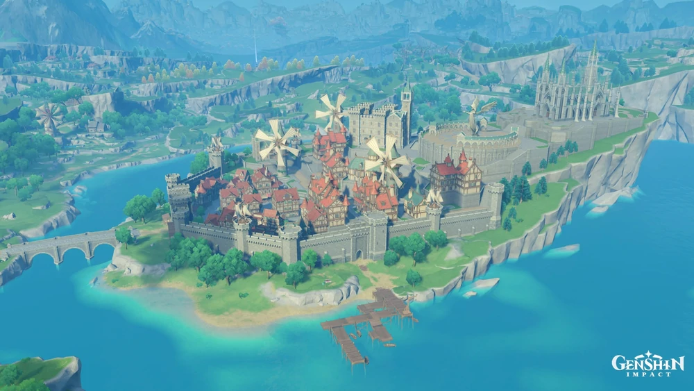

Mondstadt
Mondstadt is one of the seven regions in Teyvat, and the first in which the Traveler starts to look for their lost sibling. It is the city-state that worships Barbatos, the Anemo Archon.
Liyue
Liyue is one of the seven regions in Teyvat. It is the city-state that worships Morax, the Geo Archon.
Inazuma
Inazuma is one of the seven regions in Teyvat. It is an archipelagic region that worships the Raiden Shogun, the Electro Archon, who is also the leader of its governing body, the Inazuma Shogunate. Inazuma is located approximately 4 km southeast from Liyue Harbor and is a close neighbor with the Dark Sea.